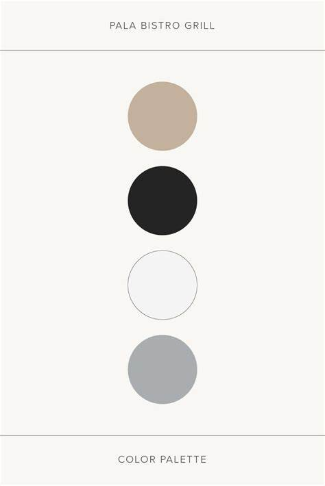
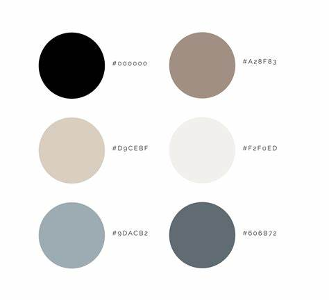

17 March, 2025/p> Primary Goal: My primary goal is to showcase all my creative work in an aesthetically pleasing manner which is clean and easy to use for user engagement.
Home Page: Introduction, links to other pages or sections About Page: Author name, background, qualifications and skills Blogs Page: Links to all the weekly blogs Essays Page: Links to all essays Design Page: Gallery of my design work for the website
Navigation Structure: Header Navigation: Home, About, Blogs, Design, Essays, Portfolio Footer: Contact info, social media links
Navigation bar: Will be at the top left
: For call to action eg: back buttons
1. Headings for sections
2. Subheadings
3. Body for content
1. Neutral Palette: Shades of beiges, white, gray and a little touch of black specifically for the text.
2. Typography: Texts and styles that are clean and readable
Headings Font: Merriweather for readability
Body Font: Montserrat
ColoursA neutral palette was chosen for simplicity
Text Colour: Black
Background: Colour: White
Primary Colour: Light Grey
Accent Colour: Beige/Dark Grey


Button Shape: Rounded corners for a minimalistic and soft look
Button Colour: White/Grey
H1: Headings
H2&H3: Subheadings and descriptions
Alignment: Left
Links: Should be in bold for a clear distinction
← Back to Blog